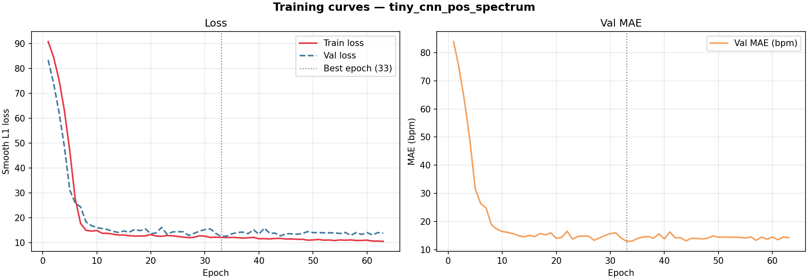
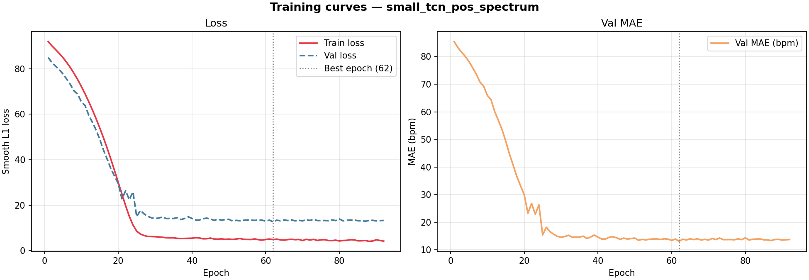
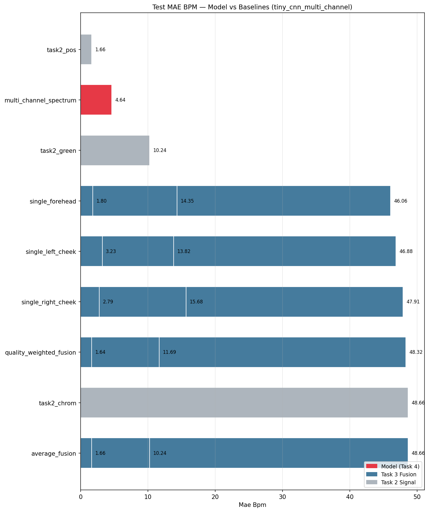
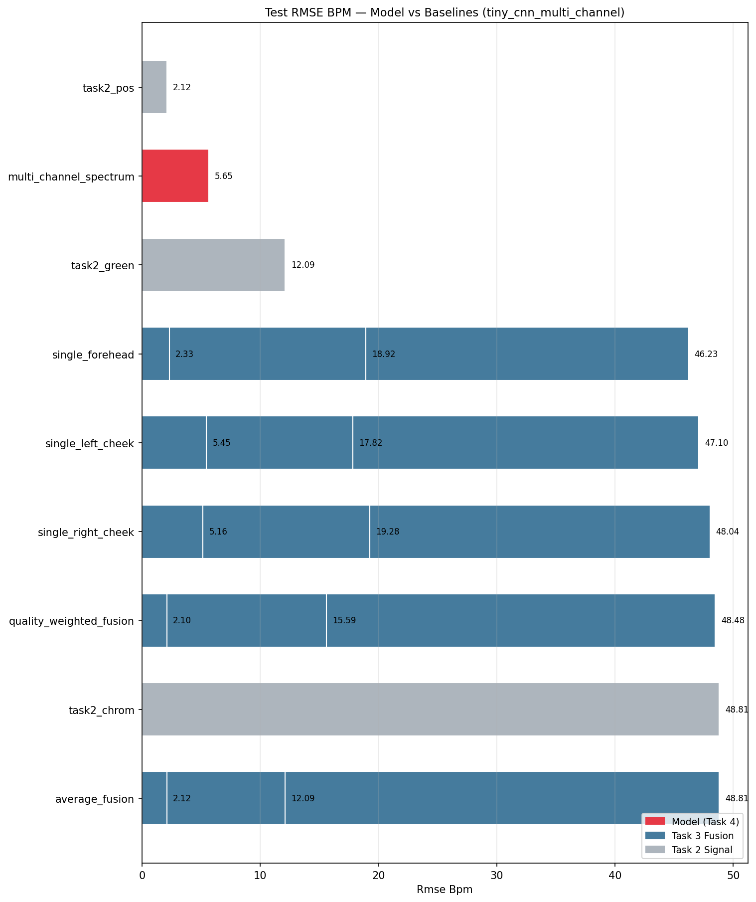

AIrPPG / Task 4
Lightweight Model Report
Task 4 huấn luyện Tiny CNN 1D và Small TCN để dự đoán heart rate
theo sliding window từ rPPG signal đã trích xuất ở Task 2/3.
Mục tiêu: đánh giá mô hình học sâu nhẹ có vượt baseline truyền thống
(Green/CHROM/POS) và multi-ROI fusion hay không, trên cùng split/protocol UBFC-rPPG.
Kết quả được báo cáo trung thực kể cả khi model không vượt baseline.
Metric đọc như thế nào?
Sai số tuyệt đối trung bình (bpm). Metric chính. Thấp hơn = tốt hơn.
Phạt lỗi lớn mạnh hơn MAE. Nếu RMSE tăng nhiều nhưng MAE không, model có vài window fail nặng.
Tương quan trend giữa dự đoán và GT. Cao = model theo trend đúng, nhưng vẫn có thể bị bias.
Sai lệch có hướng trung bình. Âm = model underpredict, dương = overpredict.
Input feature design
Mỗi sliding window trong Task 2/3 có khoảng 860 frames (~30 giây ở FPS ≈ 28.67). Dùng raw signal 860 điểm làm input CNN là không khả thi vì: (1) quá lớn, (2) window size thay đổi theo FPS mỗi video.
Giải pháp: Với mỗi window, tính FFT power spectrum
trong HR band [42–210 bpm] của rPPG signal, rồi resample thành vector cố định
n_bins = 64 bins. Đây là input shape (C, 64) không phụ
thuộc FPS. Mỗi bin ~ 2.6 bpm.
FFT của POS signal (average-ROI, Task 2). POS là baseline tốt nhất Task 2.
FFT của average-fused POS signal (Task 3). Tín hiệu ổn định hơn do multi-ROI.
Stack FFT của Green, CHROM, POS từ average-fused signal. 3 channels độc lập.
Normalization: Mean/std fit trên train split theo từng bin,
apply cho val và test. Không có data leakage. Params lưu trong
checkpoints/<run>/config.json.
Kiến trúc mô hình
TinyCNN1D — 22 385 params
Input: (B, C, 64) → Output: (B, 1) scalar HR bpm
Conv1d(C→16, k=5, pad=2) → BN → ReLU Conv1d(16→32, k=5, pad=2) → BN → ReLU → MaxPool1d(2) Conv1d(32→32, k=3, pad=1) → BN → ReLU → AvgPool(8) Flatten(256) → Linear(→64) → ReLU → Dropout(0.3) Linear(64→1) ← regression head
Inference: <1 ms/window (CPU). Phù hợp real-time.
SmallTCN — 25 217 params
Input: (B, C, 64) → Output: (B, 1) scalar HR bpm
Input proj: Conv1d(C→32) → BN → ReLU Block 1: DilatedCausalConv(32, dil=1) + residual Block 2: DilatedCausalConv(32, dil=2) + residual Block 3: DilatedCausalConv(32, dil=4) + residual Block 4: DilatedCausalConv(32, dil=8) + residual AdaptiveAvgPool(1) → Flatten → Linear(32→1)
Receptive field rộng hơn TinyCNN → lý thuyết bắt được pattern tần số dài hơn.
Loss: Smooth L1 (Huber) — ít nhạy với outlier window hơn MSE. Optimizer: Adam lr=1e-3, weight_decay=1e-4. Early stopping: patience=30 epochs theo val_mae_bpm. Seed: 42.
Kết quả huấn luyện (4 runs)
| Model | Strategy | Channels | Params | Best epoch | Best val_MAE | Test MAE ↓ | Test RMSE ↓ | Test Pearson ↑ |
|---|---|---|---|---|---|---|---|---|
| TinyCNN1D | pos_spectrum | 1 | 22 385 | 33 | 12.98 bpm | 5.53 bpm | 6.63 bpm | ~0.16 |
| TinyCNN1D | fused_spectrum | 1 | 22 385 | 41 | 12.37 bpm | 4.09 bpm | 5.18 bpm | ~0.20 |
| TinyCNN1D | multi_channel | 3 | 22 545 | 39 | 15.17 bpm | 4.64 bpm | 5.65 bpm | ~0.25 |
| SmallTCN | pos_spectrum | 1 | 25 217 | 62 | 13.11 bpm | 3.59 bpm | 4.74 bpm | ~0.10 |
SmallTCN+pos_spectrum đạt MAE thấp nhất trên test (3.59 bpm), nhờ receptive field dài hơn qua dilated convolution. fused_spectrum cải thiện TinyCNN đáng kể so với pos_spectrum.
So sánh với baseline Task 2 và Task 3 (test split)
Green method
| Strategy | MAE ↓ | RMSE ↓ | Pearson ↑ |
|---|---|---|---|
| single_forehead | 14.35 | 18.92 | 0.237 |
| single_left_cheek | 13.82 | 17.82 | 0.348 |
| single_right_cheek | 15.68 | 19.28 | 0.156 |
| average_fusion | 10.24 | 12.09 | 0.519 |
| quality_weighted | 11.69 | 15.59 | 0.407 |
CHROM method
| Strategy | MAE ↓ | RMSE ↓ | Pearson ↑ |
|---|---|---|---|
| single_forehead | 46.06 | 46.23 | 0.148 |
| average_fusion | 48.66 | 48.81 | -0.284 |
| quality_weighted | 48.32 | 48.48 | -0.319 |
POS method — baseline tốt nhất
| Strategy | MAE ↓ | RMSE ↓ | Pearson ↑ |
|---|---|---|---|
| single_forehead | 1.80 | 2.33 | 0.423 |
| single_left_cheek | 3.23 | 5.45 | 0.415 |
| single_right_cheek | 2.79 | 5.16 | 0.369 |
| average_fusion ★ | 1.66 | 2.12 | 0.467 |
| quality_weighted ★ | 1.64 | 2.10 | 0.466 |
Model Task 4 (tất cả runs, test split)
| Model | Strategy | Test MAE ↓ | Test RMSE ↓ | So với POS avg_fusion |
|---|---|---|---|---|
| SmallTCN | pos_spectrum | 3.59 bpm | 4.74 bpm | +1.93 bpm ↑ worse |
| TinyCNN | fused_spectrum | 4.09 bpm | 5.18 bpm | +2.43 bpm ↑ worse |
| TinyCNN | multi_channel | 4.64 bpm | 5.65 bpm | +2.98 bpm ↑ worse |
| TinyCNN | pos_spectrum | 5.53 bpm | 6.63 bpm | +3.87 bpm ↑ worse |
| POS quality_weighted (Task 3) | — | 1.64 bpm | 2.10 bpm | — |
| POS average_fusion (Task 3) | — | 1.66 bpm | 2.12 bpm | — |
Training curves


Comparison bar charts (test split)


Phân tích nguyên nhân model không vượt baseline
1 468 train windows từ 39 video ngắn. Mỗi video UBFC có khoảng 37 windows (30s/window, step 1s, ~70s video), nhưng nhiều video ngắn chỉ có 13 windows. CNN cần tối thiểu vài nghìn samples đa dạng để học tốt.
FFT spectrum trong HR band là input của model, nhưng cũng là thông tin mà baseline dùng trực tiếp: peak của FFT spectrum = HR estimate. Baseline không cần "học" — nó đã tối ưu trên feature này. Model CNN học thêm không có lợi thế.
Early stopping theo val_mae trên 5 sample là không ổn định. Một video "khó" có thể làm val_mae dao động và stop quá sớm hoặc quá muộn.
Với dataset nhỏ, augmentation (noise, time shift, amplitude jitter trên spectrum) có thể giúp regularize mô hình. Hiện tại chỉ dùng Dropout(0.3).
SmallTCN tốt hơn TinyCNN: Receptive field dài hơn (dilated conv 1,2,4,8) cho phép model học pattern phổ tần số phức tạp hơn trong 64 bins. Điều này gợi ý temporal/spectral structure có ích, nhưng benefit bị giới hạn bởi dataset size.
fused_spectrum tốt hơn pos_spectrum (với TinyCNN): Average-fused signal giảm nhiễu cục bộ, làm cho FFT spectrum rõ hơn → model dễ learn hơn. Điều này consistent với kết quả Task 3.
Kết luận
Trên test split UBFC-rPPG:
- Baseline POS quality_weighted_fusion (Task 3): MAE = 1.64 bpm — tốt nhất
- SmallTCN + pos_spectrum (Task 4, best model): MAE = 3.59 bpm
- TinyCNN + fused_spectrum: MAE = 4.09 bpm
- Chênh lệch: model kém hơn baseline tốt nhất ~2 bpm (~120%)
- Model vượt rõ Green method average_fusion (10.24 bpm) và toàn bộ CHROM variants (~46-48 bpm)
- fused_spectrum tốt hơn pos_spectrum đơn thuần — consistent với kết luận Task 3 về fusion
- SmallTCN tốt hơn TinyCNN — dilated conv có ích hơn standard pooling cho spectral features
- Pipeline end-to-end hoạt động: dataset → feature → train → eval → manifest đầy đủ
- Dataset lớn hơn đáng kể (MAHNOB-HCI, MMSE-HR, >200 subjects)
- Input là raw signal segment (tốt nhất ~300 frames), không phải pre-computed FFT
- Architecture end-to-end học feature từ raw RGB (DeepPhys, TS-CAN style)
- Augmentation: noise injection, signal scaling, temporal jitter
- Cross-val hoặc leave-one-out thay vì val=5 video
Kết quả âm có giá trị nghiên cứu: Confirms rằng FFT-based peak detection (baseline) là đối thủ khó trên UBFC-rPPG với protocol 30s window. Model CNN không có thông tin thêm khi input đã là spectrum — đây là bài học thiết kế feature quan trọng.
Output artifacts
modeling_v1Cấu trúc:
outputs/modeling/
modeling_manifest.json ← 49 samples, schema modeling_v1
modeling_metrics_summary.csv ← per-sample rows
modeling_aggregate_summary.csv ← mean/std per split
comparison_table_test.csv ← model vs Task2/3 baseline (test)
checkpoints/
tiny_cnn_pos_spectrum/ best_model.pt, training_history.csv, config.json
tiny_cnn_fused_spectrum/ …
tiny_cnn_multi_channel/ …
small_tcn_pos_spectrum/ …
train|val|test/<sample_id>/
model_predictions.npz schema_version, hr_timestamps, predicted_hr, …
model_metrics.json
model_metrics.csv
model_visualization.png